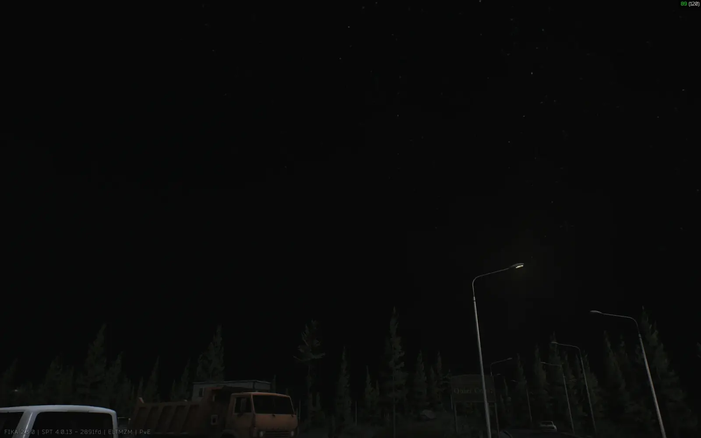
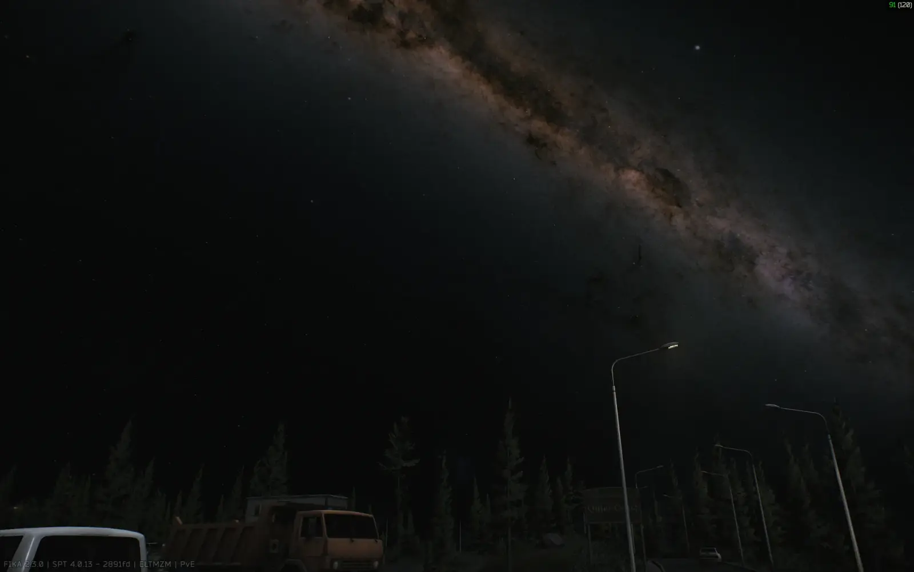

Better Night Skies
- Downloads
- 5,360
- Favourites
- 37
- Mod lists
- 84
Your night raids will finally make you look up at the sky in wonder.
Custom night sky tutorial at the bottom !
What does it do ?:
Adds several night sky textures + a star cubemap at the high cost of 0 FPS.
Illustrations:
Vanilla:

Modded:

F12 menu:
- Change the saturation and brightness of the sky.
- Change the saturation and brightness of the stars.
- Random sky texture for every raid option
- Time of day visibility multiplier (make the stars appear sooner or later in the day)
Installation:
-
Open the downloaded zip file.
-
Drag the BepInEx folder from the zip file into your SPT folder.

Custom skies tutorial:
- Download Unity 2022.3.43f1.
- Create a new project.
- Drag and drop the contents of the UnityAssetsSource folder from the mod repository.
- Add your own nightsky textures (2:1 aspect ratio) by dragging them into the asset window.
- In the inspector, disable mipmap generation, filter mode to trilinear, Max Size to whatever you want, compression to High Quality, at the bottom set AssetBundle to nightsky.bundle
- Go to Tools/Night Sky and click Build bundle.
- Place the created bundle in your mod folder and even create an addon if you want to.
- Enjoy !
Support:
Discord thread in the SPT discord : https://discord.com/channels/875684761291599922/1482076311903146054
Thanks:
The whole SPT and Fika teams for making this awesome project.
Drakia for the original gif and his config order automatizer.
MatSix for his great cloud mod that made me look more often at the sky and realize how ugly Big Silly Goose’s implementation was.
The guy at https://www.spacespheremaps.com/ makes awesome stuff.
Toobles for testing the mod !
Thumbnail from https://visitbend.com/journal/stargazing-in-bend-oregon/
Disclaimer:
After having thought about it for a while I’m going to retire from modding for the time being.
I’m relying way too much on AI to do most of the heavy work. Whenever I see AI art I can’t stop myself from being disgusted by it and I’ve come to feel the same way about AI mods. Hence why I’ve decided to stop modding altogether and dedicate the free time I have to learn C# and Unity.
The only thing I’ll keep updated will be the per-scope config for PiP-Disabler.
If anyone wants to maintain my mods they’re free to do so ! Although PiP-Disabler is an absolute mess and would probably need to be rewritten from the ground up to be maintainable…
Version
1.0.0
Initial release